Randonnée marseille
Voici une liste des randonnées urbaine et naturelle de Marseille et de ses alentours
Visite des vieux quartiers de Marseille
Dans cette randonnées vous visiterez les vieux quartiers de Marseille et ses monuments
Points visités :
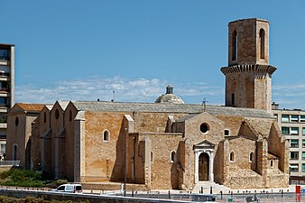
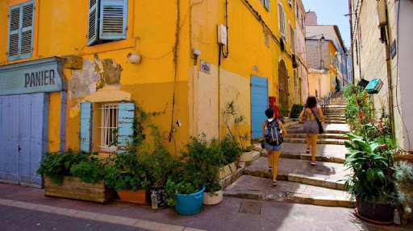
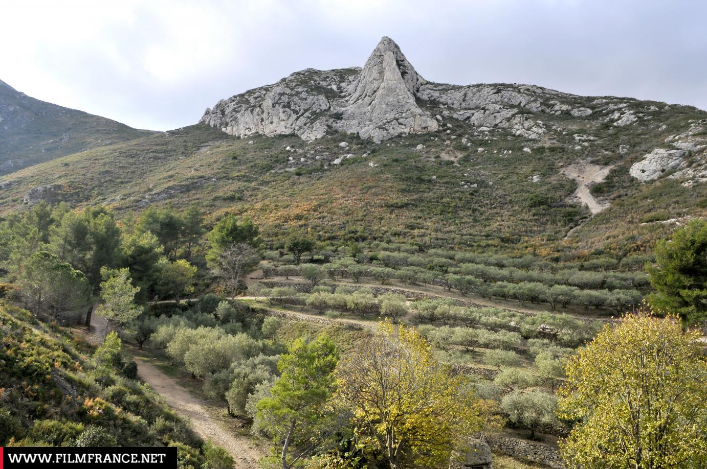
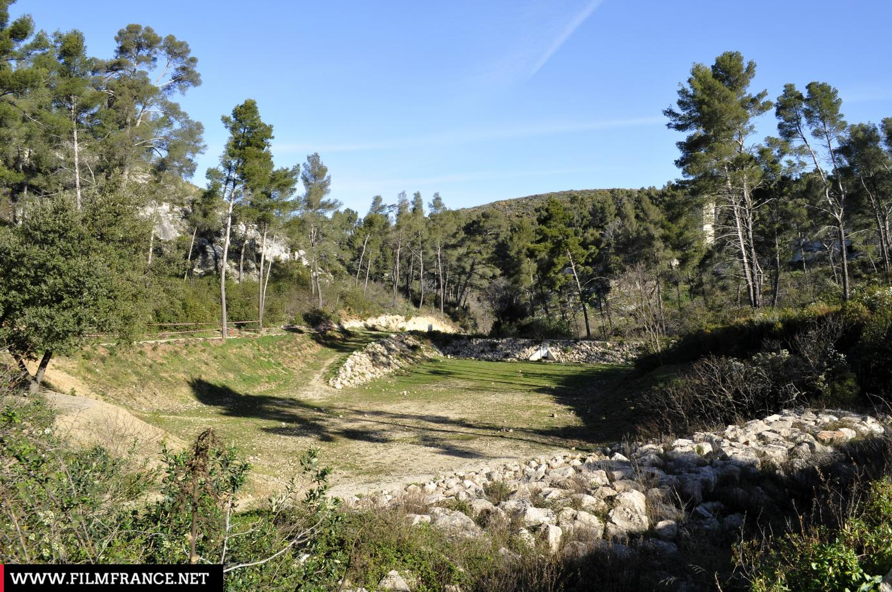
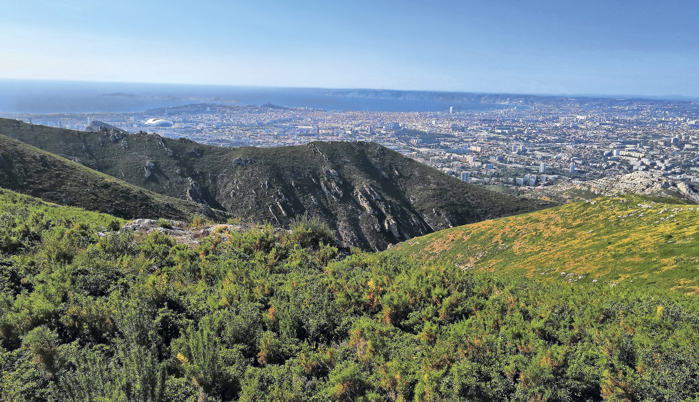
Vallon de l'Évêque au départ du Parc des Bruyères
Petite randonnée au départ du Parc des Bruyères avec de beaux sentiers à flanc de collines et une vue superbe sur tout Marseille. Retour par le Vallon de l'Évêque. Randonnée facile et très agréable.
Boucle du Parc Berger - Le Cabot
Balade au sein d'un parc public méconnu qui offre une vue splendide sur Marseille et toute sa rade. Randonnée urbaine avec 3 "géocaches" pour les amateurs.
Points visités :
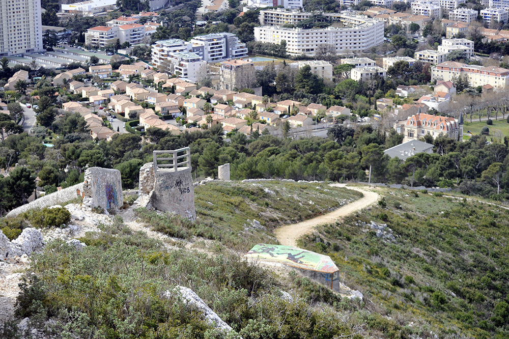
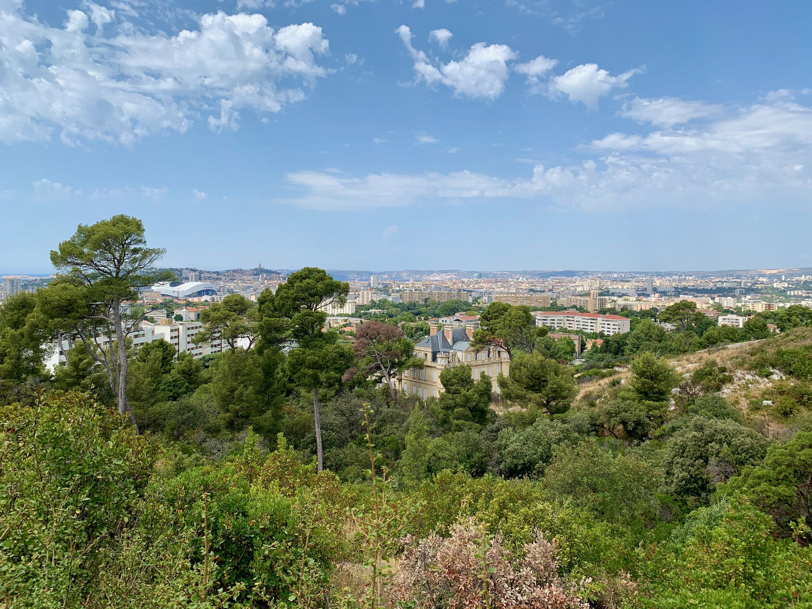
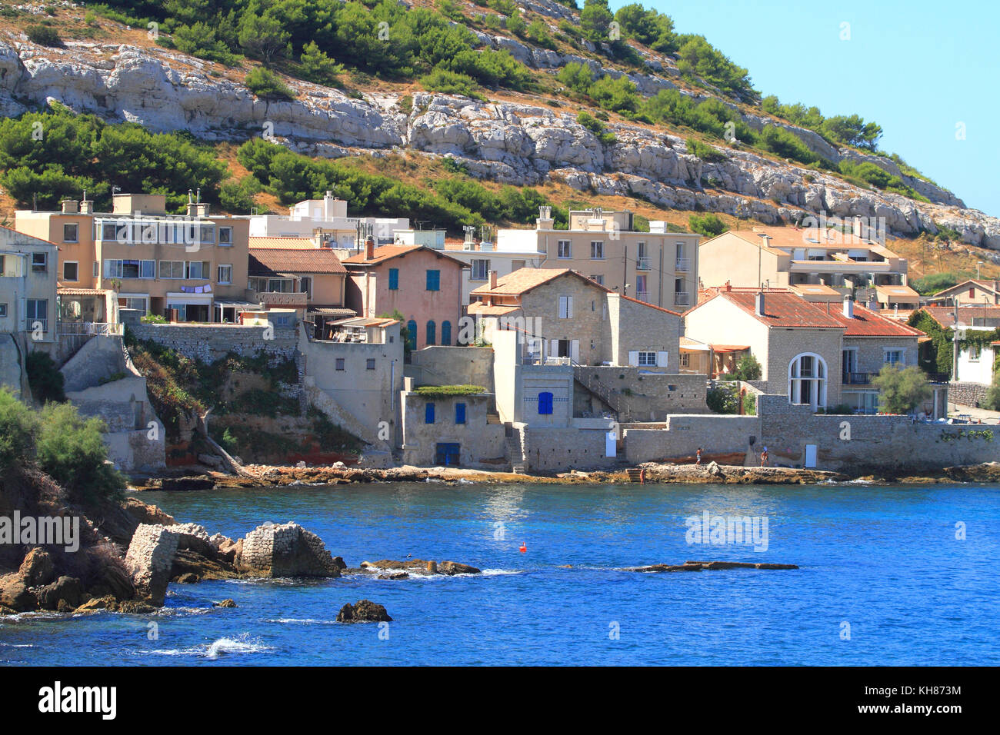
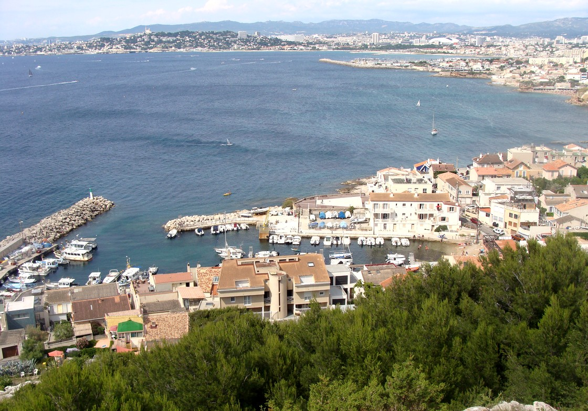
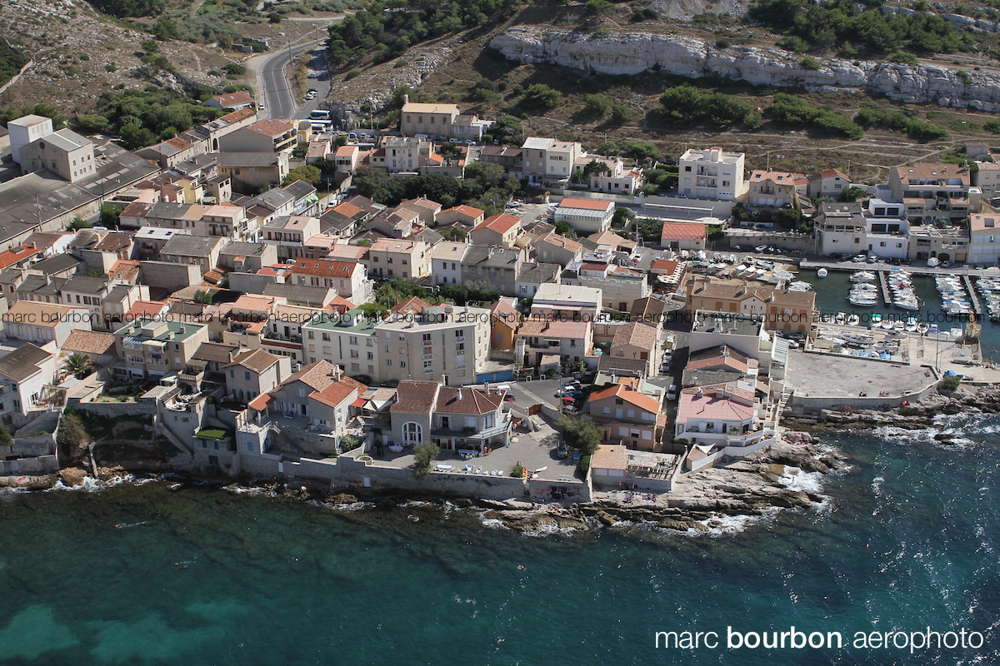
Boucle autour du Mont Redon à Marseille Luminy
Balade sans difficulté autour du Mont Redon à l'entrée du Parc Naturel des Calanques. Itinéraire très facilement accessible (voiture, bus) aux portes de Marseille, empruntant une piste DFCI bien ombragée et peu fréquentée. La pente est très régulière, d'abord faible puis s'accentuant vers le sommet du Mont Redon. L'ensemble peut être pratiqué en VTT très facilement.
Croix et castrum de Saint-Marcel
Randonnée très agréable qui nous emmène dans un premier temps à la Croix de Saint-Marcel d'où on a un point de vue superbe sur la vallée de l'Huveaune jusqu'à la Sainte-Baume à l'Est, la rade de Marseille à l'Ouest. Elle se poursuit à travers un chemin peu fréquenté vers le vieux castrum de Saint-Marcel.
Points visités :
- Castrum Saint-Marcel
- Croix de Saint-Marcel
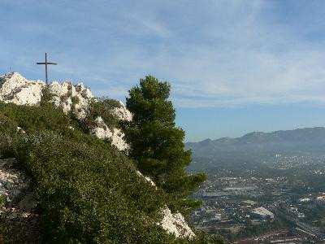
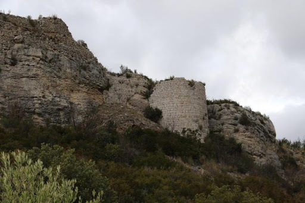
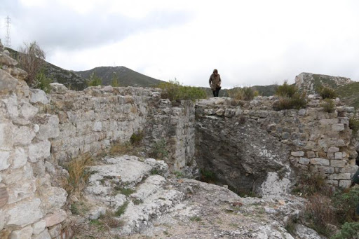